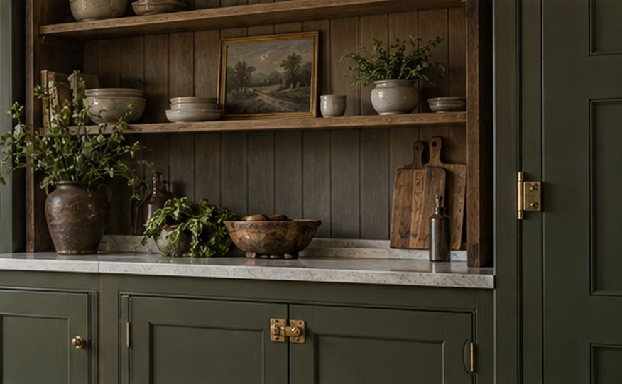
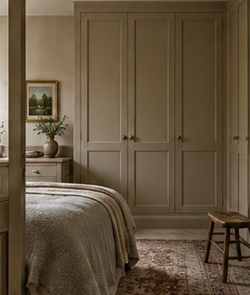
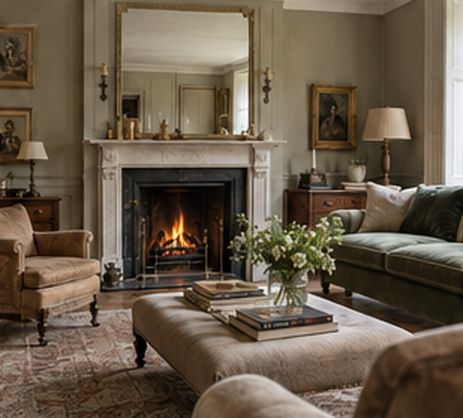
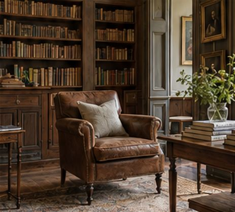

British Joinery & Interiors
We work with homeowners, interior designers, architects and builders to create thoughtful fitted furniture and interior joinery for characterful homes.
Country houses, farmhouses and village homes rarely have a straight wall. We design for the house you have, resolve every detail before anything is made, and stay accountable through to the last adjustment.
Rooms that work, in houses with history
Finished rooms first, then the drawings, samples and site decisions behind them. Project photography and film will replace these concept images.

Concept image Concept image
Concept imageFive things we make, and make well
Each is designed around the room it lives in: the wall that isn't straight, the skirting it has to meet, the way the household actually uses it.


 Concept image
Concept image
Clear thinking before careful making
Every commission starts with a conversation and a visit to the house. Nothing is cut until the drawings, finishes and fixings have been agreed with you.
Measure the room you have
Old walls lean and floors fall. We record every point, the skirting, the cornice and where the services run.
Design for manufacture
Carcasses, scribes and fillers are drawn to the survey, so the piece fits a room that isn't square.
Agree fewer, better details
In-frame doors, a cornice matched to the house, and hardware, timber and paint from our curated Grouse Standards, or something entirely your own.
Fit, finish and hand over
Scribed to the ceiling, painted, checked and handed over with a care booklet and the finish references.
“For me, good joinery is not just about storage or finish. It is about how a room feels when you walk into it. The weight of a handle. The warmth of timber. The way a drawer opens.”
What makes a room feel British?
Proportion, useful rooms, enduring materials and the layers a house gathers over time. Our guide to period detail, from Georgian panelling to Arts & Crafts oak, and how new joinery can belong.
Read The British Interior →